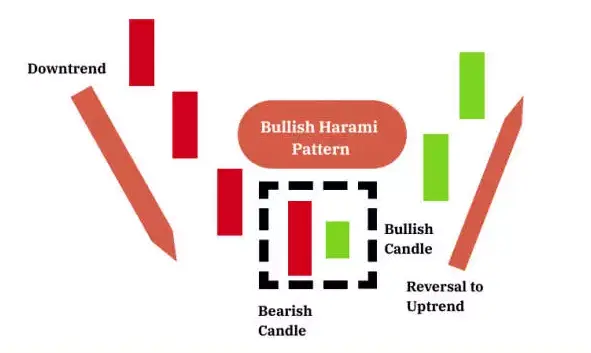

एक बुलिश हरामी कैंडलस्टिक जब दिन 1 पर एक बड़ा बियरिश लाल कैंडल दिखाई देता है जिसे अगले दिन एक छोटा बियरिश कैंडल फॉलो करता है, तब बनता है।
एक बात नोट करनी चाहिए कि बुलिश हरामी का महत्वपूर्ण पहलू यह है कि कीमतें दिन 2 पर ऊपर की ओर जाने की उम्मीद होती है।
खरीददारों द्वारा कीमतों को ऊपर होल्ड किया जाता है और वह दिन 1 की बियरिश के क्लोज से नीचे नहीं गिर पाता है।
| Formation: |
Bullish Harami candlestick Pattern का गठन है :

| Formation of the Bullish Harami Pattern in the Forex market |
फॉरेक्स मार्केट 24/5 आधार पर काम करता है, इसका मतलब होता है कि जब एक कैंडल बंद होता है, तो एक और नया कैंडल पिछले कैंडल के बंद होने के कुछ ही समय बाद वर्चुअली उसी स्तर पर खुलता है। यह सामान्य बाजार की स्थितियों में अक्सर देखा जाता है लेकिन उच्च उतार-चढ़ाव वाली अवधियों में यह बदल सकता है। फॉरेक्स में बुलिश हरामी पैटर्न अक्सर कुछ इस तरह से दिखता है:
The small green candle opens at the same level that the prior bearish candle closed at. This is typically observed in the forex market.
| Formation of the Bullish Harami Pattern on Stock Charts |
दूसरी ओर, स्टॉक्स के लिए दिन में निर्धारित ट्रेडिंग घंटे होते हैं और खुलते समय कई कारणों से गैप होने की उम्मीद होती है। उनमें से कुछ हो सकते हैं:
इसलिए, पारंपरिक हरामी पैटर्न सामने आता है, जैसा कि नीचे CAC 40 पर ट्रेड होने वाले सोसिएटे जनरल (GLE FP) के लिए देखा गया है:
ध्यान दें कि चार्ट पर कई स्थान हैं जहां बाजार गैप करता है - जो कैंडल्स के बीच विस्तृत खुले स्थानों को दर्शाता है। यह ध्यान देने लायक है कि यह आमतौर पर स्टॉक मार्केट में देखा जाता है।
| HOW TO TRADE THE BULLISH HARAMI CANDLESTICK PATTERN |
त्रेडर्स पहले बताए गए पांच-स्टेप चेकलिस्ट का उपयोग करके बुलिश हरामी का उपयोग कर सकते हैं। नीचे दिए गए GBP/USD चार्ट पर देखते हैं कि हम निम्नलिखित अंकों को अवलोकित कर सकते हैं।
बुलिश हरामी पैटर्न के पूरा होने के बाद स्टॉप न्यू लो के नीचे रखे जा सकते हैं और ट्रेडर्स बुलिश हरामी पैटर्न के पूरा होने के बाद कैंडल के खुलने पर एंट्री कर सकते हैं। यहां तक कि बुलिश हरामी पैटर्न एक संभावित अपट्रेंड की शुरुआत में नजर आता है, ट्रेडर्स नए विस्तारित अपट्रेंड को बनाए रखने के लिए मल्टीपल टारगेट स्थापित कर सकते हैं। ये टारगेट सम्प्रेषण के हाल के स्तरों के समर्थन और प्रतिरोध के स्तरों पर रखे जा सकते हैं।
इसलिए, निम्नलिखित में देखा गया है कि सोसिएटे जनरल (GLE FP) जो CAC 40 पर ट्रेड करता है के लिए पारंपरिक हरामी पैटर्न उपलब्ध है: